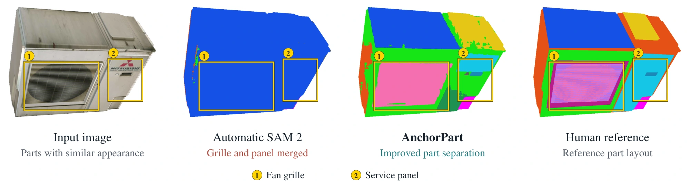
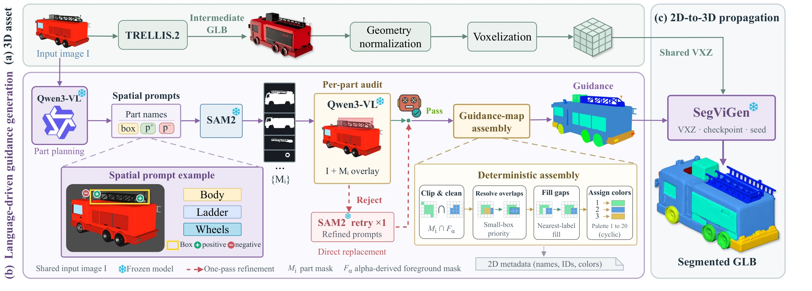
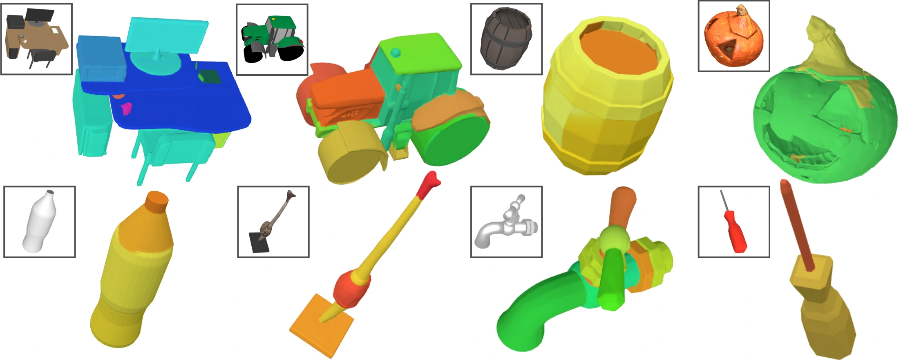

Plan & audit
Use part names and mask overlays to assess whether each candidate covers the intended part.
IMAGE-GUIDED 3D PART SEGMENTATION
1Lanzhou University2Sun Yat-sen University3Beijing Institute of Technology4Huawei5National University of Singapore

INTERACTIVE RESULTS
Choose an object. Rotate, zoom, and inspect
the segmentation from any angle.
Load the 3D result to start exploring.
Selected qualitative examples from Objaverse, using AnchorPart guidance with SegviGen. Colors distinguish regions within each object; they do not encode a shared semantic label. This browser viewer displays precomputed results.
FROM LOCAL TO ONLINE
This recording shows the earlier local interface and its part-selection interactions. It illustrates the interface design, separately from the experimental results and the real output meshes above.
OVERVIEW
Parts can look similar while serving different functions. A promptable segmentation model may merge them, leaving an ambiguous image map for a 3D segmentation backend.
AnchorPart uses a vision-language model to plan visible parts and audit each candidate mask against the intended part. When needed, it revises the spatial prompts for one SAM 2 retry. Assembly keeps the original positive point and box, separating mask refinement from overlap assignment. The resulting 2D part map guides a fixed SegviGen backend.
METHOD

Use part names and mask overlays to assess whether each candidate covers the intended part.
Retry SAM 2 once when needed, then use original points and box areas to resolve connected support and overlaps.
Supply the assembled color-coded map to the frozen SegviGen backend for 3D part segmentation.
QUALITATIVE RESULTS

Explore the implementation and evaluation materials in the project repository.
View code on GitHub ↗